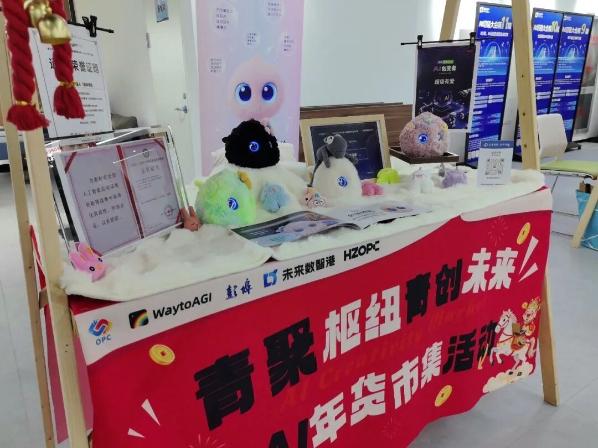
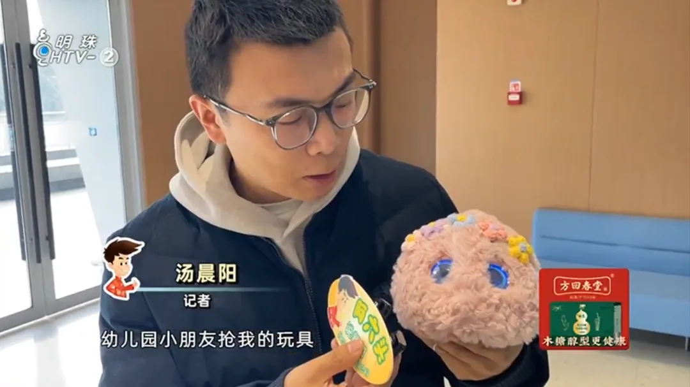

当记者模拟孩⼦的⻆⾊问球球：“幼⼉园⼩朋友抢我的玩具，我该怎么办？”
球球不仅做到了共情，还给出了可⾏建议：“⼩朋友抢玩具确实挺让⼈烦⼼的，球球觉得你可以试着和他们说说你的感受，⽐如‘这个玩具我也很喜欢，我们能不能⼀起玩呢’，然后找⽼师帮忙解决⼀下，这样既能保护你的玩具，也能避免冲突。”
作为⼼理能⼒突出的AI情绪陪伴机器⼈，“超级球球”还引起了现场观众的极⼤兴趣。有观众在体验后表⽰，球球外形很可爱，对话内容温暖⼜积极，很适合作为新年礼物送给孩⼦。
